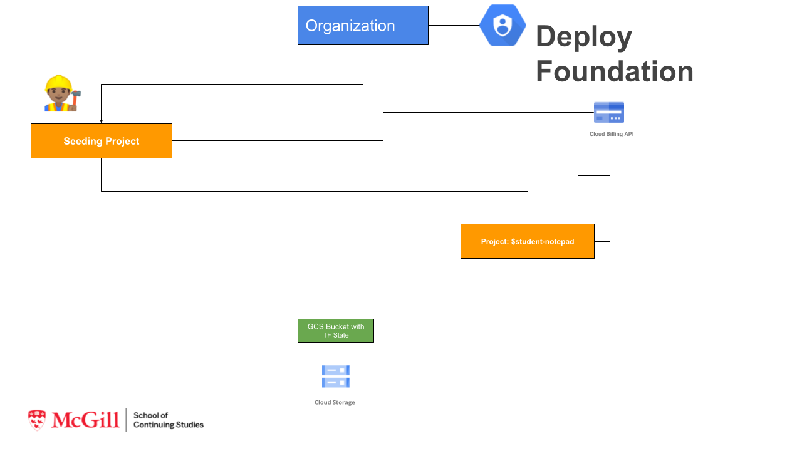
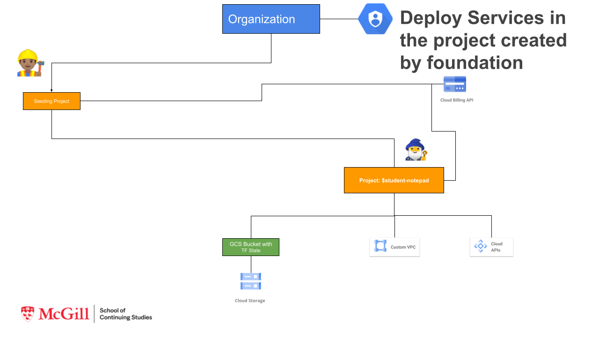

020 Module 2 Assignment Terraform Foundation
Objective:
- Learn Terraform Commands
- Learn GCP Terraform Provider
- Learn Terraform variables
- Store TF State in GCS buckets
- Learn how to create GCP resources with Terraform
Prepare Lab Environment¶
This lab can be executed in you GCP Cloud Environment using Google Cloud Shell.
Open the Google Cloud Shell by clicking on the icon on the top right of the screen:

Once opened, you can use it to run the instructions for this lab.
Working with Git and IaC¶
Git-based workflows, merge requests and peer reviews create a level of documented transparency that is great for security teams and audits. They ensure every change is documented as well as the metadata surrounding the change, answering the why, who, when and what questions.
In this set of exercises you will continue using notepad Google Source Repository that already contains you application code, dockerfiles and kubernetes manifests, that we've used in ycit019
Add Terrform IaC code to Source Code repository¶
Step 1 Go into your personal Google Cloud Source Repository:
export student_name=<write_your_name_here_and_remove_brakets>
Note
Replace $student_id with your ID
cd ~/$student_name-notepad
git pull # Pull latest code from you repo
Step 2 Create 2 folders: foundation-infrastructure and notepad-infrastructure that will contain terraform infrastructure for you GCP foundation and infrastructure that will be used Notepad application such as GKE clusters and CloudSQL database.
mkdir ycit020_module2
cd ycit020_module2
mkdir foundation-infrastructure
mkdir notepad-infrastructure
Step 3 Create a README.md file describing foundation-infrastructure folder purpose:
cat <<EOF> foundation-infrastructure/README.md
# Creation of GCP Foundation Layer
This terraform automation, is focused on creating GCP Foundation: GCP folders (if any) and GCP projects, GCS bucket to store terraform state and required IAM Configuration.
EOF
Step 4 Create a README.md file describing notepad-infrastructure folder purpose:
cat <<EOF> notepad-infrastructure/README.md
# Creation of GCP Services Layer
This terraform automation, is focused on creating gcp services such as GKE, VPC, CloudSQL and etc. inside of projects created by `foundation-infrastructure` terraform automation.
EOF
Step 5 Create a .gitignore file in your working directory:
cat<<EOF>> .gitignore
.terraform.*
.terraform
terraform.tfstate*
EOF
Note
Ignore files are used to tell git not to track files. You should also always include any files with credentials in a gitignore file.
List created folder structure along with gitignore:
ls -ltra
Step 6 Commit deploy folder using the following Git commands:
git status
git add .
git commit -m "Terraform Folder structure for module 2"
Step 6 Once you've committed code to the local repository, add its contents to Cloud Source Repositories using the git push command:
git push origin master
1 Build GCP Foundation Layer¶
In this assignment we going to build GCP Foundation layer. As we learned in the class this includes Org Structure creation with Folders and Projects, creation IAM Roles and assigning them to users and groups in organization. This Layer usually build be DevOps or Infra team that.
Since we don't have organization registered for each student, we going to skip creation of folders and IAM groups. We going to start from creation of a Project, deleting default VPC and configuring inside that project a gcs bucket that will be used in the next terraform layer to store a Terraform state.
Part 1: Create Terraform Configurations file to create's GCP Foundation Layer:
Layer 1 From existing (we going to call it seeding) project that you currently use to store code in Google Cloud Source Repository:
- Create structure: provider.tf, variable.tf, variables.tfvars, main.tf, output.tf
- Create a new
notepad-devProject- Delete Default VPC
- Create a bucket in this project to store terraform state

Part 2: Create Terraform Configurations file that create's GCP Services Layer:
Layer 2 From notepad-dev GCP Project:
- Enable Google Project Service APIs
- Create VPC (google_compute_network) and Subnet (google_compute_subnetwork)

1.1 Installing Terraform¶
GCP Cloud Shell comes with many common tools pre-installed including terraform
Verify and validate the version of Terraform that is installed:
terraform --version
If you want to use specific version of terraform or want to install terraform in you local machine use following link to download binary.
1.2 Configure GCP credentials for Terraform¶
If you would like to use terraform on GCP you have 2 options:
1). Using you user credentials, great option for testing terraform from you laptop and for learning purposes.
2). Using service account, great option if you going to use terraform with CI/CD system and fully automate Terraform deployment.
In this assignment we going to use Option 1 - using user credentials.
Step 1: In order to make requests against the GCP API, you need to authenticate to prove that it's you making the request. The preferred method of provisioning resources with Terraform on your workstation is to use the Google Cloud SDK (Option 1)
gcloud auth application-default login
1.3 Initializing Terraform¶
Terraform relies on providers to interact with remote systems. Every resource type is implemented by a provider; without
providers, Terraform can't manage any kind of infrastructure; in order for terraform to install and use a provider it must be
declared.
In this exercise you will declare and configure the Terraform provider(s) that will be used for the rest of the assignment.
1.3.1 Declare Terraform Providers¶
The required_providers block defines the providers terraform will use to provision resources and their source.
-
version: The version argument is optional and is used to tell terraform to pick a particular version from the availale versions -
source: The source is the provider registry e.g. hashicorp/gcp is the short for registry.terraform.io/hashicorp/gcp
cd ~/$student_name-notepad/ycit020_module2/foundation-infrastructure/
cat << EOF>> provider.tf
terraform {
required_providers {
google = {
source = "hashicorp/google"
version = "~> 4.37.0"
}
}
}
EOF
1.3.2 Configure the Terraform Provider¶
Providers often require configuration (like endpoint URLs or cloud regions) before they can be used. These configurations are defined by a provider block. Multiple provider configuration blocks can be declared for the same by adding the alias
argument
Set you current PROJECT_ID value here:
export PROJECT_ID=<YOUR_PROJECT_ID>
cat << EOF>> main.tf
provider "google" {
alias = "gcp-provider"
project = "$PROJECT_ID"
region = "us-central1"
}
EOF
Result
We configured provider, so that it can provision resource in specified gcp project in us-central1 region.
1.3.3 Initialize Terraform¶
Now that you have declared and configured the GCP provider for terraform, initialize terraform:
cd ~/$student_name-notepad/ycit020_module2/foundation-infrastructure/
terraform init
Explore your directory. What has changed?
ls -ltra
Result
We can see that new directory .terraform and .terraform.lock.hcl file.
Extra Research! Not Mandatory
Investigate available providers in the Terraform Provider Registry
Select another provider from the list, add it to your required providers, and to your main.tf
Run terraform init to load your new provider!
1.4 Terraform Variables¶
Input variables are used to increase your Terraform configuration's flexibility by defining values that can be assigned to customize the configuration. They provide a consistent interface to change how a given configuration behaves. Input variables blocks have a defined format:
Input variables blocks have a defined format:
variable "variable_name" {
type = "The variable type eg. string , list , number"
description = "A description to understand what the variable will be used for"
default = "A default value can be provided, terraform will use this if no other value is provided at terraform apply"
}
Terraform CLI defines the following optional arguments for variable declarations:
- default - A default value which then makes the variable optional.
- type - This argument specifies what value types are accepted for the variable.
- description - This specifies the input variable's documentation.
- validation - A block to define validation rules, usually in addition to type constraints.
- sensitive - Limits Terraform UI output when the variable is used in configuration.
In our above example for main.tf we can actually declare project and region as variables, so let's do it.
1.4.1 Declare Input Variables¶
Variables are declared in a variables.tf file inside your terraform working directory.
The label after the variable keyword is a name for the variable, which must be unique among all variables in the same module. You can choose variable name based on you preference, or in some cases based on agreed in company naming convention. In our case we declaring variables names: gcp_region and gcp_project_id
We are going to declare a type as a string variable for gcp_project_id and gcp_region.
It is always good idea to specify a clear description for the variable for documentation purpose as well as code reusability and readability.
Finally, let's configured default argument. In our case we going to use "us-central1" as a default for gcp_region and we going to keep default value empty for gcp_project_id.
cat <<EOF> variables.tf
variable "gcp_region" {
type = string
description = "The GCP Region"
default = "us-central1"
}
variable "gcp_project_id" {
type = string
description = "The GCP Seeding project ID"
default = ""
}
EOF
Note
Explore other type of variables such as number, bool and type constructors such as: list(
1.4.2 Using Variables¶
Now that you have created your input variables, let's re-create main.tf that currently has the terraform configuration for GCP Provider.
rm main.tf
cat << EOF>> main.tf
provider "google" {
alias = "gcp-provider"
project = var.gcp_project_id
region = var.gcp_region
}
EOF
Validate your terraform configuration:
terraform validate
1.4.3 Working with Variables files.¶
Create a terraform.tfvars file to hold the values for your variables:
export gcp_project_id=<YOUR_PROJECT_ID>
cat <<EOF >> terraform.tfvars
gcp_project_id = "$PROJECT_ID"
gcp_region = "us-central1"
EOF
Hint
using different env-name.tfvars files you can create different set of terraform configuration for the same code. (e.g. code for dev, staging, prod)
1.4.4 Validate configuration and code syntax¶
Let's Validate configuration and code syntax that we've added so far.
There are several tools that can analyze your Terraform code without running it, including:
Terraform has build in command that you can use to check your Terraform syntax and types (a bit like a compiler):
terraform validate
Result
Seems the code is legit so far
Does your terraform files easy to read and follow? Terraform has a built-in function to lint your configuration manifests for readability and best practice spacing:
Compare before lint:
cat terraform.tfvars
Perform lint:
terraform fmt --recursive
Check file after linting:
cat terraform.tfvars
The --recursive flag asks the fmt command to traverse all of your terraform directories and format the .tf files it finds. It
will report the files it changed as part of the return information of the command
Hint
Use the git diff command to see what was changed.
Result
We can see that terraform.tfvars file had some spacing that been fixed for better code readability.
Extra
Another cool tool that you can use along you terraform development is tflint - framework and each feature is provided by plugins, the key features are as follows:
- Find possible errors (like illegal instance types) for Major Cloud providers (AWS/Azure/GCP).
- Warn about deprecated syntax, unused declarations.
- Enforce best practices, naming conventions.
Finally let's run terraform plan:
terraform plan
Output:
No changes. Your infrastructure matches the configuration.
Result
We don't have any errors, however we don't have any resources created so far. Let's create a GCP project resource to start with!
1.5 Create GCP project using Terraform¶
1.5.1 Configure google_project resource¶
Resources describe the infrastructure objects you want terraform to create. A resource block can be used to create any object such as virtual private cloud, security groups, DNS records etc.
Let's create our first Terraform resource: GCP project.
In order to accomplish this we going to use google_project resource, documented here
In order to create a new Project we need to define following arguments: * name - (Required) The display name of the project. * project_id - (Required) The project ID. Changing this forces a new project to be created. * billing_account - The alphanumeric ID of the billing account this project belongs to.
Step 1 Let's define google_project resource in project.tf file, we will replace actual values for name and billing_account with variables:
cat <<EOF >> project.tf
resource "google_project" "project" {
name = var.project_name
billing_account = var.billing_account
project_id = var.project_id
}
EOF
Note
If you are creating as part of the GCP organization, you have to add the variable org_idin the project.tf file.
Step 2 Let's declare actual values for name, project_id and billing_account as variables in variables.tf:
cat <<EOF >> variables.tf
variable "billing_account" {
description = "The billing account ID for this project"
}
variable "project_name" {
description = "The human readable project name (min 4 letters)"
}
variable "project_id" {
description = "The GCP project ID"
}
EOF
Step 3 Update terraform.tfvars variables files, with actual values for name, project_id and billing_account:
As a best practices we going to follow specific naming convention when we going to create PROJECT_ID and PROJECT_NAME, in order to define your new GCP project:
export ORG=$student_name
export PRODUCT=notepad
export ENV=dev
export PROJECT_PREFIX=1
export PROJECT_NAME=$ORG-$PRODUCT-$ENV
export PROJECT_ID=$ORG-$PRODUCT-$ENV-$PROJECT_PREFIX # Project ID has to be unique
Verify that project name looks good:
echo $PROJECT_NAME
echo $PROJECT_ID
In order to get Education Billing account number run following command:
ACCOUNT_ID=$(gcloud beta billing accounts list | grep -B2 True | head -1 | grep ACCOUNT_ID |awk '{ print $2}')
Verify that number is good:
echo $ACCOUNT_ID
This might force installation of gcloud beta commands and may take up to 10 mins. It may also ask for some APIs to be enabled.
cat <<EOF >> terraform.tfvars
billing_account = "$ACCOUNT_ID"
project_name = "$PROJECT_NAME"
project_id = "$PROJECT_ID"
EOF
Verify if billing_account, project_name, project_id are correct values:
cat terraform.tfvars
Important
Verify if billing_account, project_name, project_id are correct values, if not set the values manually.
Step 4 Run terraform plan command:
terraform plan -var-file terraform.tfvars
Result
Plan: 1 to add, 0 to change, 0 to destroy.
Note
Take notice of plan command and see how some values that you declared in *.tvfars are visible and some values will known after apply
terraform apply -var-file terraform.tfvars
Verify GCP Project has been created:
gcloud projects list | grep notepad
Output:
PROJECT_ID: $student-name-notepad-dev-1
NAME: $student-name-notepad-dev
Success
We've created our first resource gcp_project with terraform
1.5.2 Making Project resource Immutable¶
Read more about Immutable Infrastructure in this article
Very often when you developing IaC, you need to destroy and recreate your resorces, e.g. for troubleshooting or creating a new resources using same config.
Let's destroy our project and try to recreate it again.
terraform destroy -var-file terraform.tfvars
terraform apply -var-file terraform.tfvars
Output:
│ Error: error creating project archy-notepad-dev-1 (archy-notepad-dev): googleapi: Error 409: Requested entity already exists, alreadyExists. If you received a 403 error, make sure you have the `roles/resourcemanager.projectCreator` permission
│
│ with google_project.project,
│ on project.tf line 1, in resource "google_project" "project":
│ 1: resource "google_project" "project" {
Failed
What happened? Did you project been able to create? If not why ?
If we want to make our infrastructure to be Immutable and fully automated, we need to make sure that we can destroy our service and recreate it any time the same way.
In our case we can't do that because Project ID always has to be unique.
To tackle this problem we need to randomize our Project ID creation within the terraform.
1.5.3 Create a Project using Terraform Random Provider¶
In order to create a GCP Project with Random name, we can use Terraform's random_integer resource with following arguments:
- max (Number) The maximum inclusive value of the range - 100
- min (Number) The minimum inclusive value of the range - 999
cat <<EOF >> random.tf
resource "random_integer" "id" {
min = 100
max = 999
}
EOF
random_integer resource doesn't belongs to Google Provider, it requires Hashicorp Random Provider to be initialized. Since it's native hashicorp provider we can skip the step of defining and configuring that provider, as it will be automatically initialized.
terraform init
Result
- Installing hashicorp/random v3.1.0...
- Installed hashicorp/random v3.1.0 (signed by HashiCorp)
1.5.3 Create a Project_ID name using Local Values¶
Local Values allow you to assign a name to an expression, so the expression can be used multiple times, without repeating it.
We going to define value of project_id as local. And it will be a combination of project_name - random_number.
Let's add local value for project_id and replace value var.project_id with local.project_id.
edit project.tf
Remove previous code and paste new code snippet of project.tf as following and save:
locals {
project_id = "${var.project_name}-${random_integer.id.result}"
}
resource "google_project" "project" {
name = var.project_name
billing_account = var.billing_account
project_id = local.project_id
}
We can now remove project_id value from terraform.tfvars, as we going to randomly generate it using locals expression with random_integer
edit terraform.tfvars
Remove project_id line and save.
We can now also remove project_id variable from variables.tf:
rm variables.tf
cat <<EOF >> variables.tf
variable "gcp_region" {
type = string
description = "The GCP Region"
default = "us-central1"
}
variable "gcp_project_id" {
type = string
description = "The GCP Seeding project ID"
default = ""
}
variable "billing_account" {
description = "The billing account ID for this project"
}
variable "project_name" {
description = "The human readable project name (min 4 letters)"
}
EOF
terraform plan -var-file terraform.tfvars
Output:
# random_integer.id will be created
+ resource "random_integer" "id" {
+ id = (known after apply)
+ max = 999
+ min = 100
+ result = (known after apply)
}
terraform apply -var-file terraform.tfvars
Verify GCP Project has been created:
gcloud projects list | grep notepad
Output:
PROJECT_ID: $student-name-notepad-dev-XXX
NAME: $student-name-notepad-dev
Result
Project has been created with Random project_id. This will help to make our infrastructure creation immutable, as every time project will be created with new project_id.
1.5.4 Configure Terraform Output for GCP Project¶
Outputs provide return values of a Terraform state at any given time. So you can get for example values of what GCP resources like project, VMs, GKE cluster been created and their parametres.
Outputs can be used used to export structured data about resources. This data can be used to configure other parts of your infrastructure, or as a data source for another Terraform workspace. Outputs are also necessary to share data from a child module to your root module.
Outputs follow a similar structure to variables:
output "output_name" {
description = "A description to understand what information is provided by the output"
value = "An expression and/or resource_name.attribute"
sensitive = "Optional argument, marking an output sensitive will supress the value from plan/apply phases"
}
Let's declare GCP Project output values for project_id and project_number.
You can find available output in each respective resource documents, under `Attributes Reference.
For example for GCP project available outputs are:
cat <<EOF >> outputs.tf
output "id" {
value = google_project.project.project_id
description = "GCP project ID"
}
output "number" {
value = google_project.project.number
description = "GCP project number"
sensitive = true
}
EOF
terraform plan -var-file terraform.tfvars
We can see that we have new changes to output:
Output:
Changes to Outputs:
+ id = "ayrat-notepad-dev-631"
+ number = (sensitive value)
Let's apply this changes:
terraform apply -var-file terraform.tfvars
Output:
Apply complete! Resources: 0 added, 0 changed, 0 destroyed.
Let's now run terraform output command:
terraform output
Result
We can see value of project id, however we don't see project number as it's been marked as sensitive.
Note
Outputs can be useful when you want to provide results of terraform resource creation to CI/CD or next automation tool like helm to deploy application.
1.5.5 Recreate GCP Project without Default VPC¶
One of the requirements for our solution is to create GCP project with custom VPC. However, when terraform creates GCP Project it creates DEFAULT vpc by default.
NEW_PROJECT_ID=$(gcloud projects list --sort-by=projectId | grep notepad | grep PROJECT_ID |awk '{ print $2}')
echo $NEW_PROJECT_ID
gcloud compute networks list --project `$NEW_PROJECT_ID`
Output:
NAME SUBNET_MODE BGP_ROUTING_MODE IPV4_RANGE GATEWAY_IPV4
default AUTO REGIONAL
In order to remove automatically created default VPC, specify special attribute during google_project resource creation. Check documentation here and find this argument.
Vpc get's deleted during project creation only, so let's delete again our project and recreate it without VPC following Task N1 instructions.
terraform destroy -var-file terraform.tfvars
Task N1: Find Attribute to remove default VPC during google_project resource creation. Define in it project.tf and set it's value in variables.tf so that VPC will not be created by default.
edit project.tf
TODO
edit variables.tf
TODO
terraform plan -var-file terraform.tfvars
Note
That way your VPC will not be created during project creation based on the plan.
terraform apply -var-file terraform.tfvars
Note
How long project is now getting created. This is due to after project creation, default vpc is being removed as an extra step.
Verify that default VPC has been deleted:
NEW_PROJECT_ID=$(gcloud projects list --sort-by=projectId | grep notepad | grep PROJECT_ID |awk '{ print $2}')
gcloud compute networks list --project $NEW_PROJECT_ID
Output:
Listed 0 items.
Note
You should 0 VPC networks. That means GCP project has been created without any VPC.
Success
We now able to create a GCP project without Default VPC.
1.6 Create GCP Storage bucket¶
1.6.1 Create GCP Storage bucket in New GCP Project¶
Using reference doc for google_storage_bucket
, let's create google_storage_bucket resource that will create MULTI_REGIONAL GCS bucket in newly created project. We going to give bucket name: $ORG-notepad-dev-tfstate, and we going to use this bucket to store Terraform state for GCP Service Layer.
cat <<EOF >> bucket.tf
resource "google_storage_bucket" "state" {
name = var.bucket_name
project = local.project_id
storage_class = var.storage_class
location = var.gcp_region
force_destroy = "true"
}
EOF
cat <<EOF >> variables.tf
variable "bucket_name" {
description = "The name of the bucket."
}
variable "storage_class" {
default = "REGIONAL"
}
EOF
Set variable that will be used to build name for a bucket:
export student_name=<write_your_name_here_and_remove_brakets>
export ORG=$student_name
cat <<EOF >> terraform.tfvars
bucket_name = "$ORG-notepad-dev-tfstate"
EOF
cat <<EOF >> outputs.tf
output "bucket_name" {
value = google_storage_bucket.state.name
}
EOF
Let's review the plan:
terraform plan -var-file terraform.tfvars
And create google_storage_bucket resource:
terraform apply -var-file terraform.tfvars
Verify created bucket in GCP UI:
Storage -> Cloud Storage
gsutil ls -L -b gs://$ORG-notepad-dev-tfstate
Result
GCS bucket for terraform state has been created
1.6.2 Configure versioning on GCP Storage bucket.¶
Check if versioning enabled on the created bucket:
gsutil versioning get gs://$ORG-notepad-dev-tfstate
Result
Versioning: Suspended
It is highly recommended that if you going to use GCS bucket as Terraform storage backend you should enable Object Versioning on the GCS bucket to allow for state recovery in the case of accidental deletions and human error.
Task N2: Using reference doc for google_storage_bucket find and configure argument that enables gcs bucket versioning feature.
Edit bucket.tf with correct argument.
edit bucket.tf
TODO
terraform plan -var-file terraform.tfvars
Output:
Plan: 0 to add, 1 to change, 0 to destroy.
Result
Configuration for Versioning looks correct
terraform apply -var-file terraform.tfvars
Verify versioning is ON:
gsutil versioning get gs://$ORG-notepad-dev-tfstate
Output:
Versioning Enabled
Result
We've finished building the Foundation Layer. So far we able to accomplish following:
- Create structure: provider.tf, variable.tf, variables.tfvars, main.tf, output.tf
- Create a new
notepad-devProject - Delete Default VPC
- Create a bucket in this project to store terraform state
2 Build GCP Services Layer¶
Once we finished building a GCP Foundation layer which is essentially our project, we can start building GCP Services Layer inside that project.
This second layer will configure following items:
- Enable Google Project Service APIs
- Create VPC (google_compute_network) and Subnet (google_compute_subnetwork)
2.1 Initialize Terraform for GCP Services Layer¶
2.1.1 Define and configure terraform provider¶
Step 1: Take note of newly created GCP Project_ID and BUCKET_ID:
cd ~/$student_name-notepad/ycit020_module2/foundation-infrastructure
terraform output | grep 'id' |awk '{ print $3}'
terraform output | grep 'bucket_name' |awk '{ print $3}'
Set it as variable:
export PROJECT_ID=$(terraform output | grep 'id' |awk '{ print $3}')
export BUCKET_ID=$(terraform output | grep 'bucket_name' |awk '{ print $3}')
echo $PROJECT_ID
echo $BUCKET_ID
Step 2: Declare the Terraform Provider for GCP Services Layer:
We now going to switch to notepad-infrastructure where we going to create a new GCP service Layer terraform configuration:
cd ~/$student_name-notepad/ycit020_module2/notepad-infrastructure
cat << EOF>> provider.tf
terraform {
required_providers {
google = {
source = "hashicorp/google"
version = "~> 4.37.0"
}
}
}
EOF
Step 4: Configure the Terraform Provider
cat << EOF>> main.tf
provider "google" {
project = var.gcp_project_id
region = var.gcp_region
}
EOF
Step 5: Define variables:
cat <<EOF> variables.tf
variable "gcp_region" {
type = string
description = "The GCP Region"
default = "us-central1"
}
variable "gcp_project_id" {
type = string
description = "The newly created GCP project ID"
}
EOF
Step 5: Set variables in terraform.tfvars
cat <<EOF >> terraform.tfvars
gcp_project_id = $PROJECT_ID
EOF
Step 4: Now that you have declared and configured the GCP provider for terraform, initialize terraform:
terraform init
2.1.2 Configure Terraform State backend¶
Terraform records information about what infrastructure it created in a Terraform state file. This information, or state, is stored by
default in a local file named terraform.tfstate. This allows Terraform to compare what's in your configurations with what's in
the state file, and determine what changes need to be applied.
Local vs Remote backend:
Local state files are the default for terraform. Remote state allows for collaboration between members of your team, for example multiple users or systems can deploy terraform configuration to the same environment as state is stored remotely and can be pulled localy during the execution. This however may create issues if 2 users running terraform plan and apply at the same time, however some remote backends including gcs provide locking feature that we covered and enabled in previous section Configure versioning on GCP Storage bucket.
In addition to that, Remote state is more secure storage of sensitive values that might be contained in variables or outputs.
See documents for remote backend for reference:
Step 1 Configure remote backend using gcs bucket:
Let's configure a backend for your state, using the gcs bucket you previously created in Foundation Layer.
Backends are configured with a nested backend block within the top-level terraform block While a backend can be declared
anywhere, it is recommended to use a backend.tf.
Since we running on GCP we going to use GCS remote backend. It stores the state as an object in a configurable prefix in a pre-existing bucket on Google Cloud Storage (GCS). This backend also supports state locking. The bucket must exist prior to configuring the backend.
We going to use following arguments:
- bucket - (Required) The name of the GCS bucket. This name must be globally unique. For more information, see Bucket Naming Guidelines.
- prefix - (Optional) GCS prefix inside the bucket. Named states for workspaces are stored in an object called
/ .tfstate.
cat <<EOF >> backend.tf
terraform {
backend "gcs" {
bucket = $BUCKET_ID
prefix = "state"
}
}
EOF
Step 2 When you change, configure or unconfigure a backend, terraform must be re-initialized:
terraform init
Verify if folder state has been created in our bucket:
gsutil ls gs://$ORG-notepad-dev-tfstate/state
Summary
state Folder has been created in gcs bucket and terrafrom has been initialized with remote backend
2.2 Enable required GCP Services API¶
Before we continue with creating GCP services like VPC, routers, Cloud Nat and GKE it is required to enable underlining GCP API services.
When we creating a new project most of the services API's are disabled, and requires explicitly to be enabled.
google_project_service resource allows management of a single API service for an existing Google Cloud Platform project.
Let's enable compute engine API service with terraform:
cat <<EOF >> services.tf
resource "google_project_service" "compute" {
service = "compute.googleapis.com"
disable_on_destroy = false
}
EOF
terraform plan -var-file terraform.tfvars
terraform apply -var-file terraform.tfvars
Verify Compute Engine API service has been enabled:
gcloud services list | grep Compute
Result
Compute Engine API is enabled as it is listed.
2.2 Set variables to define standard for Naming Convention¶
As per terraform best practices, when you creating terraform resources, you need to follow naming convention, that is clear for you organization.
- Configuration objects should be named using underscores to delimit multiple words.
- Object's name should be named using dashes
This practice ensures consistency with the naming convention for resource types, data source types, and other predefined values and helps prevent accidental deletion or outages:
Example:
# Good
resource "google_compute_instance" "web_server" {
name = “web-server-$org-$app-$env”
# ...
}
# Bad
resource “google_compute_instance” “web-server” {
name = “web-server”
# …
Create variables to define standard for Naming Convention:
cat <<EOF >> variables.tf
variable "org" {
type = string
}
variable "product" {
type = string
}
variable "environment" {
type = string
}
EOF
export ORG=$student_name
export PRODUCT=notepad
export ENV=dev
cat <<EOF >> terraform.tfvars
org = "$ORG"
product = "$PRODUCT"
environment = "$ENV"
EOF
Review if created files are correct.
2.3 Create a custom mode network (VPC) with terraform¶
Using google_compute_network resource create a VPC network with terraform.
Task N3: Create vpc.tf file and define custom mode network (VPC) with following requirements:
* Description: VPC that will be used by the GKE private cluster on the related project
* name - vpc name with following pattern: "vpc-$ORG-$PRODUCT-$ENV"
* Subnet mode: custom
* Bgp routing mode: regional
* MTUs: default
Hint
To create "vpc-$ORG-$PRODUCT-$ENV" name, use format function, and use %s to convert variables to string values.
Define variables in variables.tf and terraform.tfvars if required.
Define Output for:
- Generated VPC name:
google_compute_network.vpc_network.name - self_link - The URI of the created resource.
cat <<EOF >> vpc.tf
TODO
EOF
cat <<EOF >> outputs.tf
TODO
EOF
Review TF Plan:
terraform plan -var-file terraform.tfvars
Output:
+ create
Terraform will perform the following actions:
# google_compute_network.vpc_network will be created
+ resource "google_compute_network" "vpc_network" {
+ auto_create_subnetworks = false
+ delete_default_routes_on_create = false
+ description = "VPC that will be used by the GKE private cluster on the related project"
+ gateway_ipv4 = (known after apply)
+ id = (known after apply)
+ mtu = (known after apply)
+ name = "vpc-ayrat-notepad-dev"
+ project = (known after apply)
+ routing_mode = "REGIONAL"
+ self_link = (known after apply)
Create VPC:
terraform apply -var-file terraform.tfvars
Verify that custom-mode VPC has been created:
gcloud compute networks list
gcloud compute networks describe $(gcloud compute networks list | grep NAME |awk '{ print $2 }')
Output:
autoCreateSubnetworks: false
description: VPC that will be used by the GKE private cluster on the related project
kind: compute#network
name: vpc-student_name-notepad-dev
routingConfig:
routingMode: REGIONAL
selfLink: https://www.googleapis.com/compute/v1/projects/XXX
x_gcloud_bgp_routing_mode: REGIONAL
x_gcloud_subnet_mode: CUSTOM
Result
VPC Network has been created, without auto subnets.
5 Commit Terraform configurations to repository and share it with Instructor/Teacher¶
Step 1 Commit ycit020_module2 folder using the following Git commands:
cd ~/$student_name-notepad
git add .
git commit -m "TF manifests for Module 2 Assignment"
Step 2 Push commit to the Cloud Source Repositories:
git push origin master
Step 3 This step will grant view access for Instructor to check you assignments
In your Cloud Terminal:
gcloud projects add-iam-policy-binding $PROJECT_ID --member='user:ayrat.khayretdinov@gmail.com' --role=roles/viewer
gcloud projects add-iam-policy-binding $PROJECT_ID --member='user:valavan@gmail.com' --role=roles/viewer
gcloud projects add-iam-policy-binding $PROJECT_ID --member='user:mfsilv@gmail.com' --role=roles/viewer
Result
Your instructor will be able to review you code and grade it.